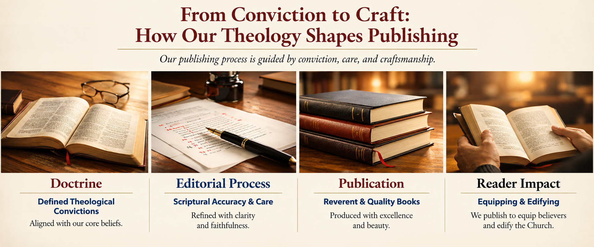

ABOUT ZAY-MARIE PRESS
Where the Bible Means What It Says
Zay-Marie Press is an independent Christian publishing house committed to producing biblically faithful works that strengthen believers, edify the Church, and contribute to the faithful proclamation of God's Word.
WHY WE EXIST
Books That Strengthen the Church
We publish books that strengthen the Church, not books that merely sell to the Church.
Biblical fidelity, doctrinal substance, and spiritual usefulness take precedence over passing trends. We believe Christian publishing should place trustworthy resources into the hands of believers—resources capable of teaching, strengthening, correcting, encouraging, and equipping.
